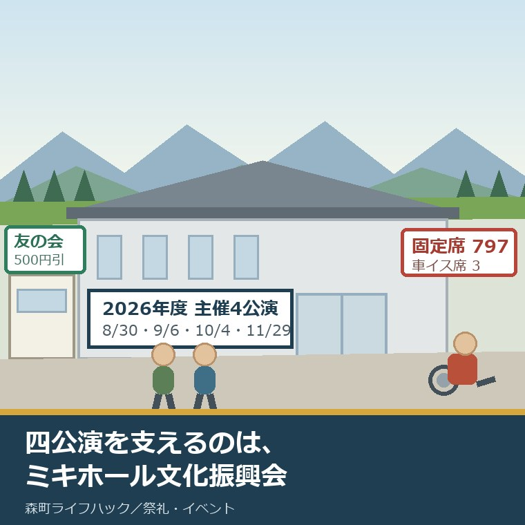
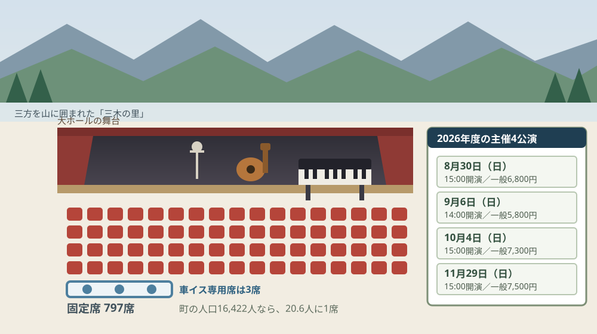
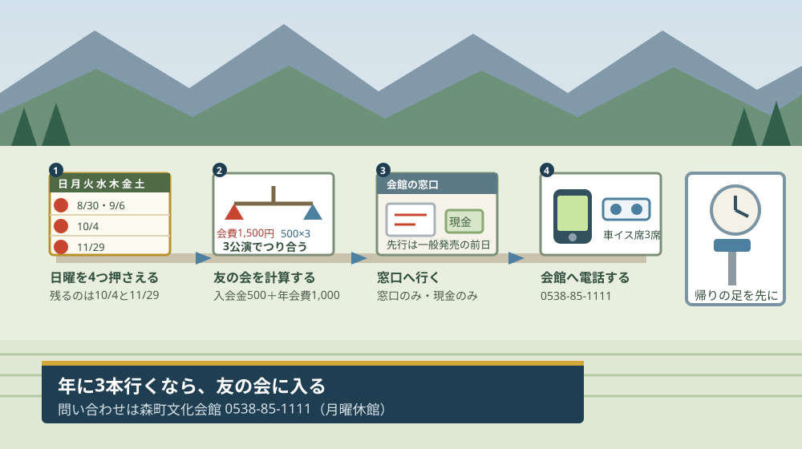

森町文化会館のコンサート｜ミキホール文化振興会の4公演

この記事の要点
Q. 森町の文化会館では、コンサートってどれくらいやっているんですか。
A. 2026年度の主催公演は4本です。8月30日ザ・ワイルドワンズ、9月6日荒牧陽子・エハラマサヒロ、10月4日松崎しげる、11月29日加藤登紀子。いずれも日曜日、大ホール（固定席797席）で全席指定、主催はミキホール文化振興会。一般5,800円から7,500円です。
静岡県周智郡森町（遠州森町）で、名前のあるコンサートが開かれる場所は、事実上ひとつです。森町文化会館の大ホールです。森町森1485にあります。
私は磐田市で小さな不動産業を営みながら、森町の空き家・農地・実家じまいのご相談を受けています。ホールの話を書くのは、町の楽しみを紹介したいからではありません。誰が回しているのか、その仕組みが何人で成り立っているのかを数えたいからです。
今日は2026年8月29日です。2026年度の主催公演のうち1本目は、明日8月30日の日曜日にあります。ザ・ワイルドワンズの60周年記念コンサートです。
この記事では、4公演の日付と金額を並べたうえで、主催であるミキホール文化振興会について公表資料から分かることと、分からないまま残ったことを、はっきり分けて書きます。
公式情報から確定できること
2026年8月29日時点で、森町の公表ページから確認できたことを順に並べます。出典は記事の末尾に載せています。
一つ目。施設の正式名称は森町文化会館です。住所は〒437-0215 静岡県周智郡森町森1485、電話は0538-85-1111。窓口の時間は9時00分から17時00分まで、月曜が休館日です。
二つ目。愛称の「ミキホール」は、三木の里から来ています。森町の施設紹介ページには「三方を小高い緑の山々に囲まれた森町は、昔から『三木の里』と呼ばれてきました」と書かれています。ホールの名前が、町の地形の呼び名から取られている。
三つ目。大ホールの固定席は797席、車イス専用席は3席です。町の施設ページには、木のぬくもりを基調として仕上げられており、演劇などの公演に適した日本的なホールだと説明されています。
四つ目。2026年度の主催公演は4本で、主催はいずれもミキホール文化振興会です。会館そのものの主催ではなく、この振興会の名前が主催者として並んでいます。
五つ目。1本目は2026年8月30日（日曜日）のザ・ワイルドワンズ60周年記念コンサート「お楽しみはこれからだ！〜想い出の渚の軌跡〜」です。開場14時30分、開演15時00分。ミキホール友の会6,300円、一般6,800円（税込）。全席指定で、未就学児の入場はできません。
六つ目。2本目は9月6日（日曜日）の「荒牧陽子・エハラマサヒロ 最強ものまね競演」です。開場13時30分、開演14時00分。友の会5,300円、一般5,800円（税込）。一般発売は6月14日、友の会先行は6月13日、電話予約は6月16日午前9時からでした。
七つ目。3本目は10月4日（日曜日）の「松崎しげる コンサート 2026」です。開場14時30分、開演15時00分。友の会6,800円、一般7,300円（税込）。一般発売は7月12日午前9時から、友の会先行は7月11日午前9時からでした。
八つ目。4本目は11月29日（日曜日）の「TOKIKO KATO CONCERT 2026 明日への讃歌 ジーナの生きた100年」です。開場14時30分、開演15時00分。友の会7,000円、一般7,500円（税込）。一般発売は8月23日、友の会先行は8月22日、電話予約は8月25日午前9時からでした。
九つ目。4本とも日曜日で、全席指定で、未就学児は入場できません。開演時刻は15時00分が3本、14時00分が1本です。
十番目。ミキホール友の会は、入会金500円と年会費1,000円です。継続する場合は年会費1,000円だけ。会員期間は4月1日から翌年3月31日までで、年度途中の入会はその日から同年度の3月31日までとなります。
十一番目。友の会の特典は3つです。会報誌が隔月で郵送されること、会館主催事業のチケットが一般価格から500円引きになること、そして一般販売日の前日に先行販売があること。先行販売は会館の窓口のみ、現金のみです。
十二番目。チケットの取り扱いは森町の外にも広がっています。ワイルドワンズ公演の場合、森町文化会館のほか、袋井市月見の里学遊館、磐田市民文化会館「かたりあ」、磐田市情報館、兵藤楽器店掛川店、アクトシティチケットセンター、チケットぴあで扱われました。
十三番目。大ホールの使用料は、平日で午前8,800円・午後13,200円・夜間17,600円・全日39,600円です。貸館の申し込みは、使用日の12か月前から30日前までと案内されています。
十四番目。ミキホール文化振興会という団体そのものの説明は、私が見た範囲の町の公表ページには見つかりませんでした。事務局がどこに置かれているのか、会員は何人か、いつからある組織なのか。主催者名としては4本すべてに出てくるのに、輪郭が公表資料から追えません。ここは未確認のまま残します。

この絵で描きたかったのは、4本の公演がすべて日曜に置かれているという一点です。平日の夜に一本もない。これは働いている人にも、送り迎えが要る人にも効いてくる置き方です。
もう一つ描いたのは、客席の中の3席です。車イス専用席は3席あり、公演によってはプレイガイドで扱われず、会館へ直接問い合わせる案内になっています。数が少ないぶん、動き方が他の席と違います。
4公演を、1枚の表にする
日付・時刻・金額を、公表値のまま1枚にまとめます。ここは事実の並べ直しで、私の計算は入っていません。
| 公演 | 日付（曜日） | 開場／開演 | 友の会 | 一般 |
|---|---|---|---|---|
| ザ・ワイルドワンズ60周年記念コンサート | 2026年8月30日（日） | 14:30／15:00 | 6,300円 | 6,800円 |
| 荒牧陽子・エハラマサヒロ 最強ものまね競演 | 2026年9月6日（日） | 13:30／14:00 | 5,300円 | 5,800円 |
| 松崎しげる コンサート 2026 | 2026年10月4日（日） | 14:30／15:00 | 6,800円 | 7,300円 |
| TOKIKO KATO CONCERT 2026 | 2026年11月29日（日） | 14:30／15:00 | 7,000円 | 7,500円 |
この表を見て私が最初に思ったのは、価格の幅が1,700円しかないということです。いちばん安い5,800円と、いちばん高い7,500円の差です。4本を通しで見る人にとって、値段はほとんど判断材料になりません。
一般価格を4本足すと27,400円、1本あたりの平均は6,850円です。友の会価格で足すと25,400円、差は2,000円になります。ここから先は私の計算です。
797席を、町の人口で割ってみる
ここからは割り戻しです。分母を先に書きます。森町の人口は、住民基本台帳による2026年8月1日現在で16,422人、世帯数は6,763世帯です。
16,422人を797席で割ると、約20.6人に1席という計算になります。町の人が20人に1人ずつ来れば、大ホールはそれで埋まる。これが森町のホールの規模感です。
この数字は、私にはかなり大きく見えます。人口16,422人の町が、800席規模のホールを持っている。1回の公演で、町の人口の4.9パーセントが入る器です。
裏を返せば、町の中だけで797席を埋め続けるのは難しいということでもあります。だから森町文化会館のチケットは、袋井・磐田・掛川・浜松のプレイガイドで売られている。4本の公演が日曜の午後に置かれているのも、遠くから来る人の動きに合っているように見えます。
貸館の側からも一度割ってみます。大ホールの平日全日の使用料は39,600円です。797席で割ると、1席あたり約49.7円になります。ホールを1日借りる費用は、座席1つあたり50円ということです。
この約50円という数字を、私は安いと考えます。ただし、これは箱を借りる費用だけです。出演者への支払い、宣伝、当日の人手はここに入っていません。主催者が背負っているのは、この39,600円ではなく、その先の部分です。
友の会1,500円は、何公演で元が取れるか
ミキホール友の会の会費を、公演の本数で割り戻します。ここも私の計算です。
初年度は入会金500円と年会費1,000円で、合計1,500円かかります。チケットは1公演につき500円引きなので、3公演で1,500円。差し引きちょうどゼロになります。
4公演すべてに行くと2,000円引きですから、初年度でも500円の得です。2年目からは年会費1,000円だけなので、2公演で並び、3公演で500円、4公演で1,000円の得になります。
だから私はこう言い切ります。年に3本行くつもりがあるなら、友の会に入らない理由はありません。2本で迷うのは分かりますが、3本目からは計算のほうが答えを出しています。
ただし、金額より効く特典が別にあると私は考えています。一般販売日の前日に、会館の窓口で先行販売があるという一点です。全席指定のホールで前日に動けるかどうかは、500円の割引とは別の価値です。
その代わり、この先行販売は窓口のみ・現金のみです。森町の外に住んでいる家族が、親御さんのぶんまで先行で押さえるのは難しい。電話でもインターネットでもなく、会館まで行って現金を出す必要があります。
良い点：この仕組みの、よくできているところ
森町文化会館の主催公演と友の会には、評価したい点が4つあります。順に書きます。
一つ目。4本の日付が、年度の早い段階から並んでいることです。11月29日の公演のチケットが8月23日に発売されている。3か月以上前から予定に入れられるので、遠方の家族と合わせやすくなります。
二つ目。価格が5,800円から7,500円の幅に収まっていることです。都市部の同じ規模の公演と比べて、私の感覚では高くありません。町のホールが、町の人が払える額を意識していることが、この幅に出ています。
三つ目。チケットの取り扱いが町の外にも広がっていることです。袋井、磐田、掛川、浜松。森町の中だけで売ろうとしていない。797席という器の大きさに対して、正しい売り方だと考えます。
四つ目。車イス専用席が3席、施設ページに数字で書かれていることです。あるかないかではなく、3席と書いてある。少ないと言うこともできますが、公表されている数字があるかどうかは、行く前に確認する側にとって大きな差です。
注文したい点：見に行く側から見て足りないところ
ここからは、公演を見に行く側・連れて行く側の立場での注文を4つ書きます。批判ではなく、使う側から見た報告です。
一つ目。ミキホール文化振興会という団体の説明が、公表ページに見当たらないことです。4本すべての主催者として名前が出ているのに、事務局も、会員数も、いつからある組織なのかも分かりません。支えている側の輪郭が見えないままです。
二つ目。友の会の先行販売が、窓口のみ・現金のみであることです。特典としては強いのに、使える人が会館まで来られる人に限られます。森町の外に住む子ども世代が、親のぶんを押さえるという使い方ができません。
三つ目。公演のページに、駐車場と終演後の帰りの案内が見当たらないことです。開演15時00分の公演なら、終演は夕方になります。森町は路線バスの本数が限られる地区があり、車に乗らない人が797席のうち何席を占めているのかは、券を売る側にしか分かりません。地区ごとの足の事情は森町の公共交通空白地域のほうに書きました。
四つ目。4本とも未就学児が入場できないことです。これは公演の性質上やむを得ない条件だと理解しています。ただ、町にひとつしかない大ホールの主催公演が4本とも同じ条件だと、小さい子どもがいる家庭は年度を通して対象から外れます。

この図で二段目に天秤を置いたのは、友の会が損か得かは、行く本数だけで決まるからです。会報誌が届くことや、先行で押さえられることを別にすれば、計算は3公演で釣り合います。
四段目に電話を置いたのは、車イス席のためです。3席という数は、インターネットの座席表の上で選べる数ではありません。必要な方は、券が出た日に会館へ電話するのが確実だと私は考えます。
対案・結論：今日、ご家族が確かめられること
森町の外に住んでいても、今日のうちに進められることがあります。順番に5つ書きます。
一つ目。10月4日と11月29日を、家族の予定表に先に入れてください。2026年度の残りの主催公演はこの2本です。親御さんを連れて行く予定なら、日曜の午後がまるまる埋まる前提で組みます。
二つ目。年に何本行くかを、先に決めてください。3本以上なら友の会に入る計算になり、2本以下なら入会金500円のぶんだけ損になります。この判断は、会館に行く前に紙の上で終わります。
三つ目。明日8月30日のワイルドワンズ公演について知りたい場合は、今日のうちに0538-85-1111へ電話してください。窓口は9時00分から17時00分です。当日券の有無は公表ページには書かれていないので、電話でしか分かりません。
四つ目。車イス席が要る場合は、公演名を伝えて会館に直接聞いてください。3席しかなく、公演によってはプレイガイドで扱われません。券が出てから動くのでは間に合わないことがあります。
五つ目。終演後の帰り方を、行きを決める前に決めてください。開演15時00分の公演なら、外に出るのは夕方です。運転しない方を連れて行くなら、帰りの足のほうが先に決まります。
ここまでやっても、チケットを今日買う必要はありません。今日の成果は、残り2本の日付と、友の会の損益分岐点3公演と、会館の電話番号が揃ったことです。この3つがあれば、次に迷ったときに5分で決められます。
家族に残す記録
確かめた内容は、その日のうちに1枚にまとめてください。ホールの話は毎年繰り返すので、一度書いておくと来年度そのまま使えます。
書き出す項目は6つです。①公演名と日付 ②開場・開演時刻 ③一般価格と友の会価格 ④友の会の会費と更新月（4月1日） ⑤会館の電話番号と窓口時間 ⑥車イス席の要否。年度が変わっても同じ枠で埋められます。
加えて、確認できなかったことも同じ紙に残します。「ミキホール文化振興会の事務局・会員数・設立年は町の公表ページで確認できなかった」「当日券の有無は公表されていない」の2つです。分からないことを書いておくと、来年その欄から確認を再開できます。
もう一つ、親御さんが友の会の会員かどうかを一行だけ書き足してください。会員期間は4月1日から翌年3月31日までの年度単位で、継続には年会費が要ります。会報誌が隔月で届いているなら会員です。実家の郵便物を整理するときに、この会報誌を「不要なもの」に分類してしまわないための一行でもあります。
大石の視点
ここからは公表資料の話ではなく、私がどう見ているかを書きます。体験談として書ける現場の一場面は手元にないので、意見として明示します。
私がこの4本を並べて最初に思ったのは、「これは町の予算の話ではなく、団体の話だ」ということでした。主催者はミキホール文化振興会であって、会館そのものではありません。名前を4回出している団体が、この4本を背負っています。
その団体の輪郭が公表資料から追えないことに、私は引っかかっています。事務局はどこか、会員は何人か、赤字が出たときに誰が埋めるのか。祭りの実行委員会でも、地区の役員会でも、私が最初に聞くのはこの3つです。
これは批判ではありません。公表する義務がある情報とは限らないからです。ただ、支えているのは誰かを知りたい住民が、公表ページからはたどり着けない。その事実だけは書いておきます。
不動産の仕事をしていると、この形には見覚えがあります。建物は町のもので、中身を回しているのは別の団体、という組み合わせです。屋台の蔵も、地区の集会所も、同じ形をしています。器の所有と、中身の担い手が別なら、傷むのは先に中身のほうです。器の名義と担い手の関係は屋台をしまう建物は誰の名義かで書きました。
797席という数字も、私には重く見えます。町の人口の20.6人に1席です。この器を年に4回動かすということは、4回とも数百人単位で人を集める必要があるということです。1回外すと、次の年の企画が縮む。そういう緊張が、この4本の裏側にあると私は考えます。
一方で、私が迷っているのは、日曜午後の4本という置き方です。平日夜の公演がないのは、集客の判断としては正しいのだろうと思います。ただ、日曜の午後は地区の行事や農作業とも重なる時間帯です。どちらを取るかを毎年迫られている人が、町の中にいるはずです。
ここは私が外から見ているだけなので、断定はしません。過去の公演の集客がどうだったのかは公表されていませんし、平日夜を試した回があったのかも確認できませんでした。推測として書き留めるにとどめます。
その上で、行く側の方に一つだけ申し上げます。年に1本でいいので、実際に797席の中に座ってみてください。券を買うことが、この4本を来年も続けるかどうかの判断材料になっているはずです。同じ会館のお祭り広場で開かれる産業祭については森町もりもり2万人まつりを支えるのは誰かに書きました。
そして、決めるのは今日でなくて構いません。私は「まだ決めない」という状態を、悪いことだとは思っていません。ただ、10月4日と11月29日という2つの日付だけは、今日のうちに書き留めておいてください。祭りや行事を誰が支えているかという話は森町の祭りを支える側の負担にも書いています。
まとめ
この記事で確認した事実を、最後に並べ直します。すべて2026年8月29日時点で公表されている内容です。
- 森町文化会館は森町森1485。電話0538-85-1111、窓口は9時00分から17時00分、月曜休館
- 愛称「ミキホール」は、森町が昔から「三木の里」と呼ばれてきたことに由来する（町の施設紹介ページ）
- 大ホールの固定席は797席、車イス専用席は3席
- 2026年度の主催公演は4本。主催はいずれもミキホール文化振興会
- 8月30日（日）ザ・ワイルドワンズ60周年記念コンサート／14:30開場・15:00開演／友の会6,300円・一般6,800円
- 9月6日（日）荒牧陽子・エハラマサヒロ 最強ものまね競演／13:30開場・14:00開演／友の会5,300円・一般5,800円
- 10月4日（日）松崎しげる コンサート 2026／14:30開場・15:00開演／友の会6,800円・一般7,300円
- 11月29日（日）TOKIKO KATO CONCERT 2026／14:30開場・15:00開演／友の会7,000円・一般7,500円
- 4本とも日曜日・全席指定・未就学児の入場不可
- ミキホール友の会は入会金500円・年会費1,000円。会員期間は4月1日から翌年3月31日
- 友の会の特典は、会報誌の隔月郵送、主催事業チケットの一般価格から500円引き、一般販売日前日の先行販売（窓口のみ・現金のみ）
- 大ホールの使用料は平日で午前8,800円・午後13,200円・夜間17,600円・全日39,600円。申込は使用日の12か月前から30日前まで
- 一般価格4本の合計は27,400円、平均6,850円。友の会価格の合計は25,400円で差は2,000円（私の計算）
- 友の会は初年度1,500円かかるため3公演で釣り合い、4公演で500円の得。2年目以降は2公演で釣り合う（私の計算）
- 町の人口16,422人を797席で割ると約20.6人に1席。全日使用料39,600円を797席で割ると1席あたり約49.7円（私の計算）
- ミキホール文化振興会の事務局・会員数・設立年は、町の公表ページで確認できなかった
よくある質問
Q1. 森町文化会館では、2026年度にどんなコンサートがありますか。
A1. 主催公演は4本です。8月30日にザ・ワイルドワンズ60周年記念コンサート、9月6日に荒牧陽子・エハラマサヒロ 最強ものまね競演、10月4日に松崎しげる コンサート 2026、11月29日にTOKIKO KATO CONCERT 2026。いずれも日曜日、森町文化会館大ホールで全席指定です。主催はミキホール文化振興会です。
Q2. ミキホール友の会に入ると、どれだけ安くなりますか。
A2. 主催事業のチケットが一般価格から500円引きになります。入会金500円と年会費1,000円で、会員期間は4月1日から翌年3月31日まで。初年度は1,500円かかるので、3公演で差し引きゼロ、4公演で500円の得です。継続は年会費1,000円だけなので、2公演で並び、3公演から得になります。
Q3. 森町文化会館の大ホールは何席ありますか。
A3. 固定席797席と、車イス専用席3席です。車イス席は公演によってプレイガイドでの取り扱いがなく、会館へ直接問い合わせる案内になっている回があります。会館の電話は0538-85-1111、住所は〒437-0215 静岡県周智郡森町森1485で、月曜が休館です。
最後に一つだけ。ここに書いた日付、時刻、金額、席数、会費は、いずれも森町の公表ページに記載されている値を、2026年8月29日に確認して書き写したものです。1本あたりの平均、友の会の損益分岐点、1席あたりの人口・使用料は、私がその値を分母で割った概算であり、森町が公表している数字ではありません。ミキホール文化振興会の組織の詳細と、各公演の残席・当日券の有無は確認できていません。公演内容・料金・発売方法は変更されることがあります。行く前に、必ず森町文化会館（0538-85-1111）へご確認ください。
参考にした公式情報
- ザ・ワイルドワンズ60周年記念コンサート／静岡県森町（「更新日：2026年04月14日」と表示されていること、令和8年8月30日（日曜日）開場14時30分・開演15時00分、会場が森町文化会館大ホール、主催がミキホール文化振興会、入場料がミキホール友の会6,300円・一般6,800円（税込）で全席指定、未就学児の入場不可、車イス席はプレイガイドでの販売がなく会館へ問い合わせること、チケットの取扱いが森町文化会館・袋井市月見の里学遊館・磐田市民文化会館「かたりあ」・磐田市情報館・兵藤楽器店掛川店・アクトシティチケットセンター・チケットぴあであること、会館の電話が0538-85-1111（9時00分〜17時00分、月曜休館）、住所が〒437-0215 静岡県周智郡森町森1485であることを2026年8月29日に確認）
- 荒牧陽子・エハラマサヒロ 最強ものまね競演／静岡県森町（「更新日：2026年06月05日」と表示されていること、令和8年9月6日（日曜日）開場13時30分・開演14時00分、会場が森町文化会館大ホール、主催がミキホール文化振興会、入場料が友の会5,300円・一般5,800円（税込）で全席指定、未就学児の入場不可、友の会先行が6月13日・一般発売が6月14日・電話予約が6月16日午前9時からであることを2026年8月29日に確認）
- 松崎しげる コンサート 2026／静岡県森町（「更新日：2026年06月10日」と表示されていること、令和8年10月4日（日曜日）開場14時30分・開演15時00分、会場が森町文化会館大ホール、主催がミキホール文化振興会、入場料が友の会6,800円・一般7,300円（税込）で全席指定、未就学児の入場不可、友の会先行が7月11日午前9時から・一般発売が7月12日午前9時から・電話予約が7月14日午前9時からであることを2026年8月29日に確認）
- TOKIKO KATO CONCERT 2026 明日への讃歌 ジーナの生きた100年／静岡県森町（「更新日：2026年07月19日」と表示されていること、令和8年11月29日（日曜日）開場14時30分・開演15時00分、会場が森町文化会館大ホール、主催がミキホール文化振興会、入場料が友の会7,000円・一般7,500円（税込）で全席指定、未就学児の入場不可、友の会先行が8月22日・一般発売が8月23日・電話予約が8月25日午前9時からであることを2026年8月29日に確認）
- 大ホール・リハーサル室・楽屋／静岡県森町（「更新日：2025年12月10日」と表示されていること、大ホールの固定席が797席、車イス専用席が3席であること、木のぬくもりを基調として仕上げられた演劇などの公演に適した日本的なホールと説明されていることを2026年8月29日に確認）
- 森町文化会館の施設紹介／静岡県森町（「更新日：2024年11月01日」と表示されていること、「三方を小高い緑の山々に囲まれた森町は、昔から『三木の里』と呼ばれてきました」と記載され、愛称ミキホールの由来が説明されていることを2026年8月29日に確認）
- ミキホール友の会／静岡県森町（「更新日：2024年12月01日」と表示されていること、入会金500円・年会費1,000円（継続は年会費のみ）であること、会員期間が4月1日から翌年3月31日までで年度途中入会は入会日から同年度末までとなること、特典が会報誌の隔月郵送・当館主催事業チケットの一般価格から500円引き・一般販売日の前日の先行販売（窓口のみ・現金のみ）であることを2026年8月29日に確認）
- 森町文化会館使用料／静岡県森町（「更新日：2025年05月18日」と表示されていること、大ホールの平日使用料が午前8,800円・午後13,200円・夜間17,600円・全日39,600円であることを2026年8月29日に確認）
- 森町の月別人口／静岡県森町（2026年8月1日現在の総人口が16,422人、世帯数が6,763世帯と記載されていることを2026年8月29日に確認）

最終確認日：2026-08-29 ／ 本記事は公表情報と執筆者の見解を分けて記載しています。1公演あたりの平均額、友の会の損益分岐点、1席あたりの人口と使用料は、いずれも執筆者が公表値を分母で割った概算であり、森町が公表している統計ではありません。ミキホール文化振興会の事務局・会員数・設立年は町の公表ページで確認できていません。各公演の残席・当日券の有無、駐車場と終演後の交通の案内も確認できていません。公演内容・料金・発売方法・使用料は変更されることがあります。行く前に、必ず森町文化会館（0538-85-1111）へご確認ください。